"It's named after the constellation, not the destination."
Tragically, Crater lived up to its name during its last flight. Please, a moment of silence for my faithful certification rocket.
I started development of Crater for my Canadian Association of Rocketry Level 1, 2, and 3 certifications. I’ve always wanted to be certified for HPR, not just for access to high explosives, but also to prove myself as an amateur rocketeer. A rocket is possibly the fastest (and thus, coolest) thing that anyone can build, and I wanted to experience the full certification experience, from optimizing OpenRocket designs, to building the rocket, to seeing it fly, to searching for it, and to eventually crater it on the prarie fields.
Flight Planning
For the level 1 and 2 certification, Crater would fly on an I600 Aerotech motor in a 38mm casing, while for the level 3 certification, a 54mm J800 would be used. This is the equivalent of the TRA L1 and L2 certifications.
As a grand finale, as all of my peers have insisted, Crater will fly on a K1103X and attempt to break the sound barrier.
| Motor | Altitude | Max Speed | Purpose |
|---|---|---|---|
| I600 | 872m | 153m/s (550km/hr) | CAR L1 & 2 |
| J800 | 1885m | 256m/s (921km/hr) | CAR L3 |
| K1103X | 2523m | 346m/s (1246km/hr, or Mach 1.03) | Sound barrier |
Flight 1: L1&2 Certification
For the level 1 and 2 certification, Crater flew the I600, as planned. The flight was textbook perfection, from takeoff to landing. All of the chutes deployed on time and correctly, and the rocket structure held together under the 18Gs of acceleration it experienced.
Flight Data
The flight data for Crater’s L1 certification flight is available here:
The important ones are velocity and altitude.

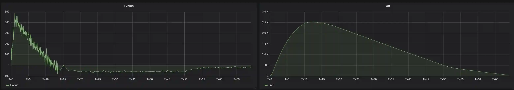
I am officially L2 certified!


Flight 2: L3 Certification
For the level 3 certification, Crater did not fly the J800, due to the cost and complexity of flying two motors. Instead, the K1103X was chosen for the flight. The ascent was once again perfect, reaching a top speed of 1280km/hr and an apogee of 2.8 kilometers. Crater's nosecone, fin can, and body assembly endured a crushing 30.8Gs of acceleration without issue, alongside the stresses of Max-Q and the transonic turbulence.
However, due to my inexperience with designing black powder charges for upper atmosphere, the drogue failed to deploy and Crater landed at close to 600km/hr, shattering the fin can and nosecone. However, the body tubes survived intact and the internal electronics were generally unharmed!


Despite everything, this was an excellent experience. Managed to crack the sound barrier and prove that Crater can (mostly) survive a Mach 1 impact! It's a win in the end.


System Design
Before any CAD or FEA or CFD started, I first spent a month or so in OpenRocket, designing for ever-changing requirements and different motors.
- Weight: 5kg fully loaded or less
- Parachute Size: 60in (shoutout to UBC Rocket COTS Recovery!)
- Stability: 1.8-3.0
- Altitude: 2700m or less with GPS, 500m or less without
- Length to diameter ratio: 21 or less

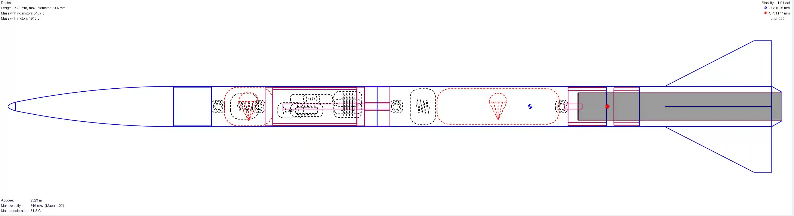
Besides quantifiable requirements, the rocket also had to be easily assembled and disassembled for transport and launch, as well as be made for construction with the tools I have.

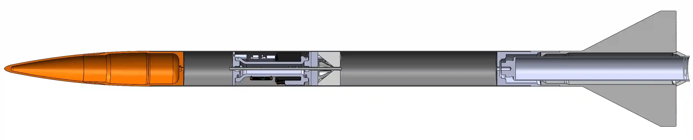
I then ported everything over into Solidworks, working out the actual designs; everything from the assembly process to ziptie placements were determined.
This was my first project in Solidworks and OpenRocket!
Nosecone

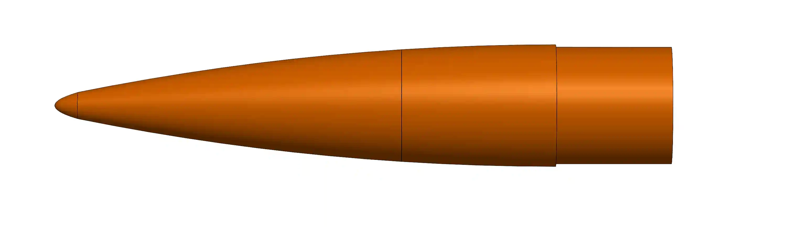
The nosecone is a 6:1 tangent ogive with a 0.5 power series tip. The tangent ogive is for speed (and looks), and the power series is to add structural strength (and not kill anyone on the way down).

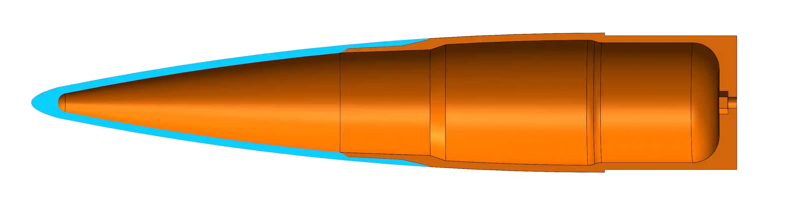
Internally, the nosecone is hollow and splits into two sections, since the Tenlog D3 I’m using doesn’t have the vertical space to print the nosecone in one piece.
Almost everything on this rocket is designed with an overhang of 60° or less, allowing for prints with very little support.
Avionics

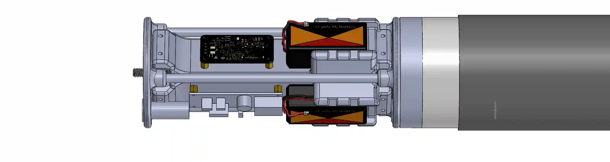
The avionics bay is a three-sided design similar to RotaSat, with three sleds mounted to it.


Each of the sleds has a different function, each powered by a 900mAh battery, and were soldered together by yours truly:

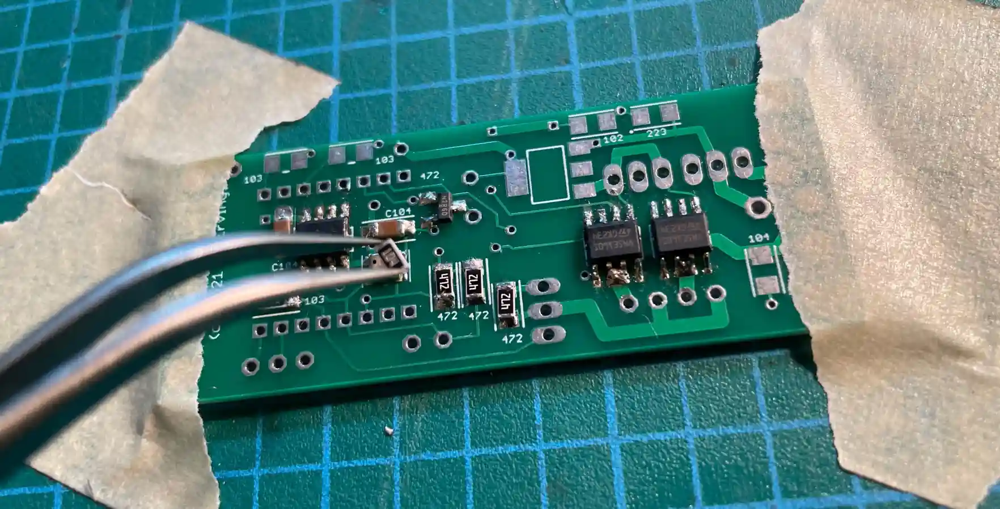
Eggtimer Quantum Flight Computer: datalogging and the dual deploy charges

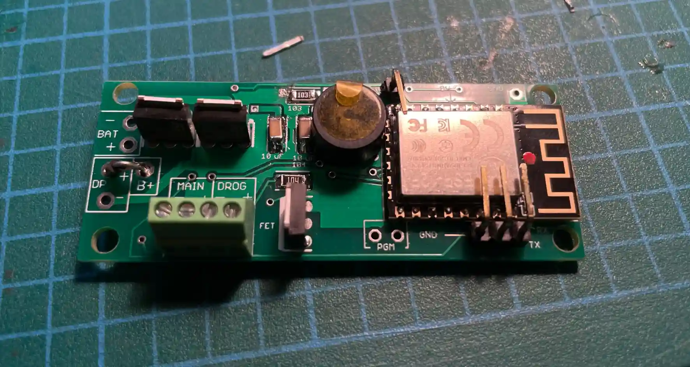
Eggtimer Mini GPS: Live GNSS data for tracking

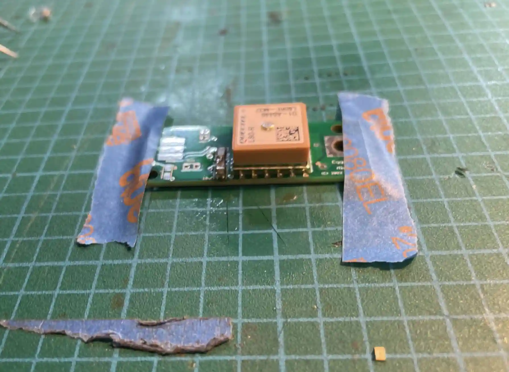
Payload: RotaSat’s Board, for live telemetry and redundant data collection

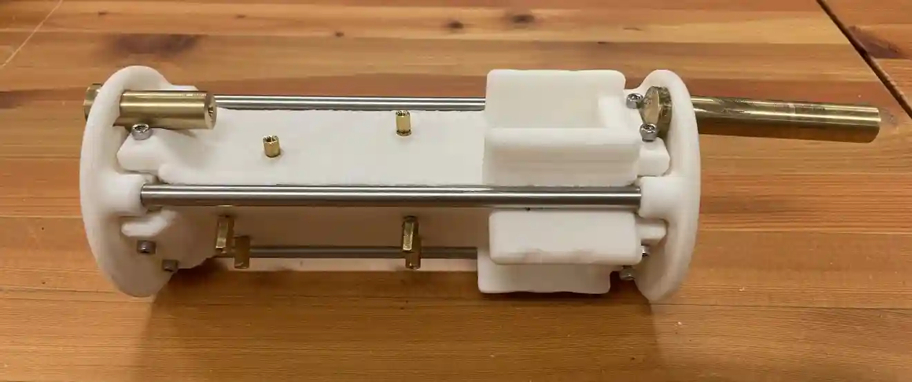
The brass tubes are machined black powder holders for ejection. The steel tubing going down the sides are due to the fact that the avionics bay is sandwiched between the upper eyenut and the lower coupler, which causes it to be a part of the structure that tensions the rocket together. In retrospect, the top plate should be CNC'ed aluminum for greater reliability.

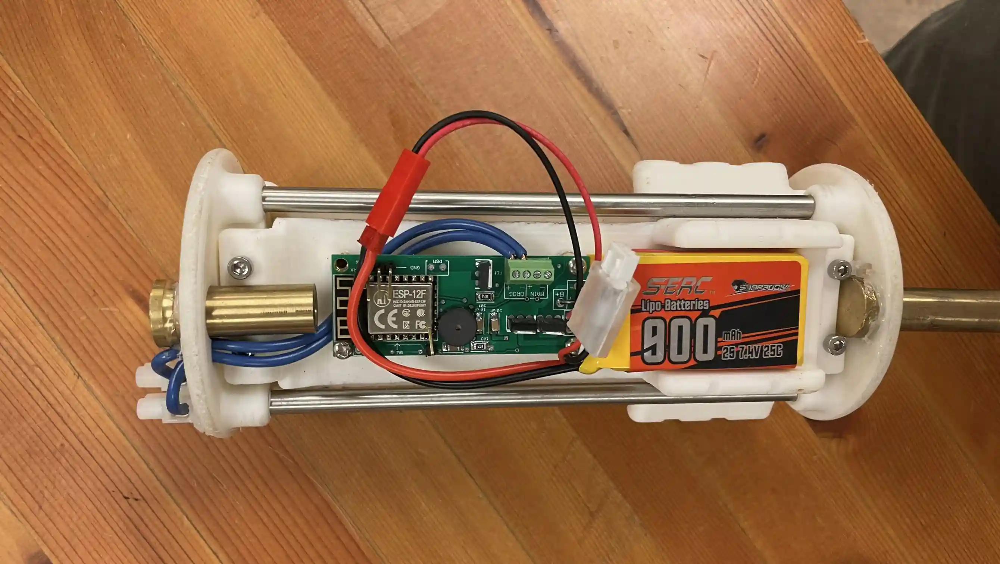
Internals
Parachute System

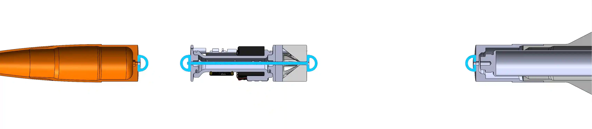
The parachute lines diagram is a complete set of eyenuts, shock cords, and threaded rods that make their way through the rocket. It’s designed so that the forces of parachute deployment are distributed to the nosecone (the lightest piece of the rocket) and the fin can (the strongest piece of the rocket), passing through and leaving the delicate avionics bay untouched.

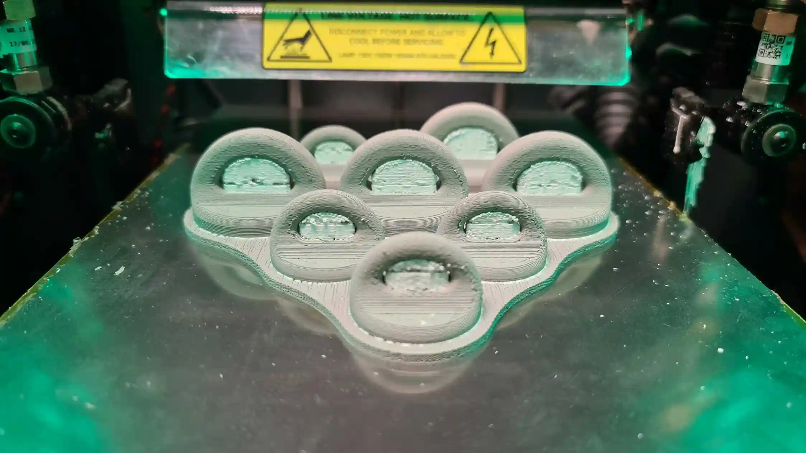
A set of strength and weight optimized metal 3D-printed eyenuts were made on a Rapidia printer and used for attaching the kevlar shock cords.
Coupling
The couplers of the rocket is what keeps it together through the flight. However, this means they had to be the strongest parts of the rocket, and simultaneously be light for their large size.


Thus, parts like the avionics and propulsion coupler were optimized for weight and strength through topology studies and finite element analysis. Topology optimization was used to find the general areas of material safe to take away, while FEA was used to ensure the weight-reduced part would still hold with a safety factor of 5 or more.

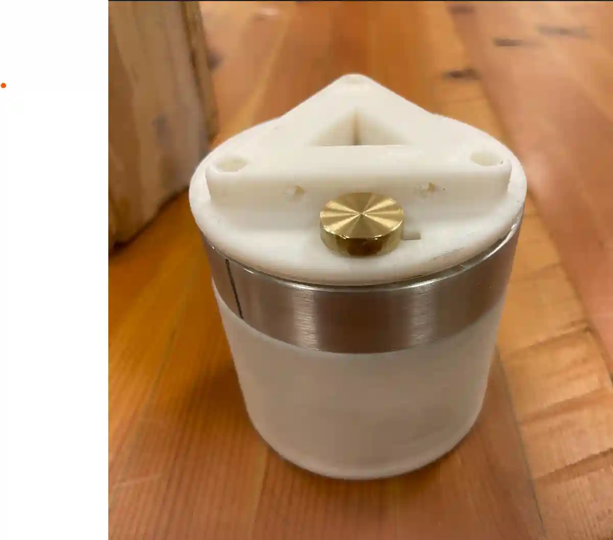
Fins


The fins are fully 3D printed as a double-diamond airfoil for better stability in a smaller package. Fin flutter calculations were also done to ensure the fins don’t shear and the rocket doesn’t become a pencil in flight.


Similarily to the nosecone, the fin can was assembled and epoxied in two pieces. The 54mm casing is taller than the printer itself (which is a little bit scary…).


To fit the 38mm casing, I designed a self-aligning centering ring, to fit into the fin can. Without it, the 54mm casing fits perfectly. It's the first fin can of its kind.


I also machined a couple of boattails to reduce tail-end drag, allowing for higher maximum speed and altitude. They also double as motor retainment.
Testing
With the rocket constructed, the only thing left to do was to test it on the ground before flying.


The charges were loaded, the flight computer was primed, and the dual-deploy ejection system was tested by blowing both the nosecone and the fin can off of the rocket.
With the recovery system working, all there was to do was fly.